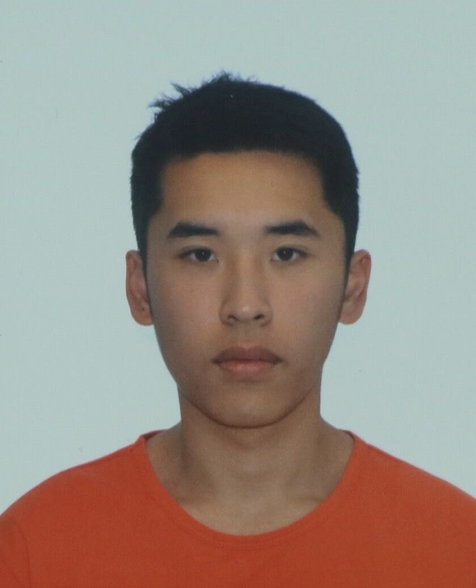

Dawson Berry
Feb 2024 - Present
Network Technology (Class 2025)
School of Information Technology
Carleton University

Junwei (Jason) Huo
May 2024 - Present
Network Technology (Class 2025)
School of Information Technology
Carleton University